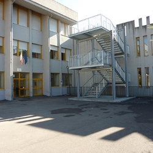
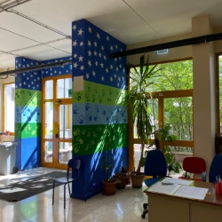
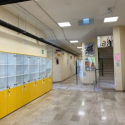

Benvenuti nella pagina degli orari scolastici dell'Istituto di
Istruzione Superiore Andrea Bafile di L'Aquila

Dal 1934, il Liceo Scientifico "A. Bafile" si impegna a offrire
un'istruzione seria e qualificata, educando gli studenti alla
cittadinanza attiva, alla legalità e al rispetto dei diritti di tutti.

Gli studenti acquisiscono una preparazione scientifica, umanistica,
linguistica ed artistica completa. Vengono formati anche dal punto di
vista sociale e civile, per rispettare tutte le diversità di ognuno.

Il Liceo è un luogo in cui si progetta il futuro attraverso il sapere
tecnico-scientifico e l'incontro con il passato. Promuoviamo una
riflessione critica sulla storia, per permettere ad ognuno di
costruire la propria idea sul presente e sul futuro.